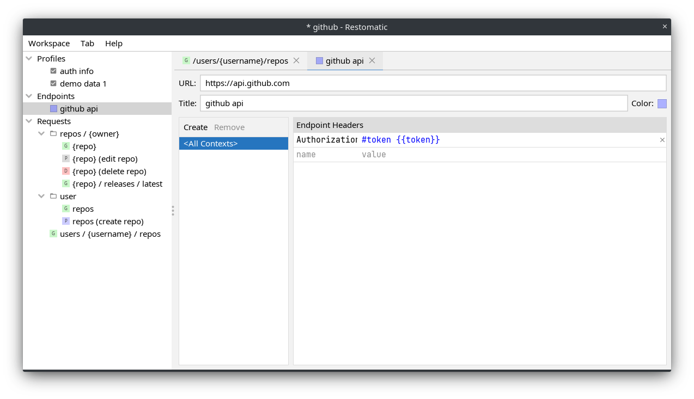
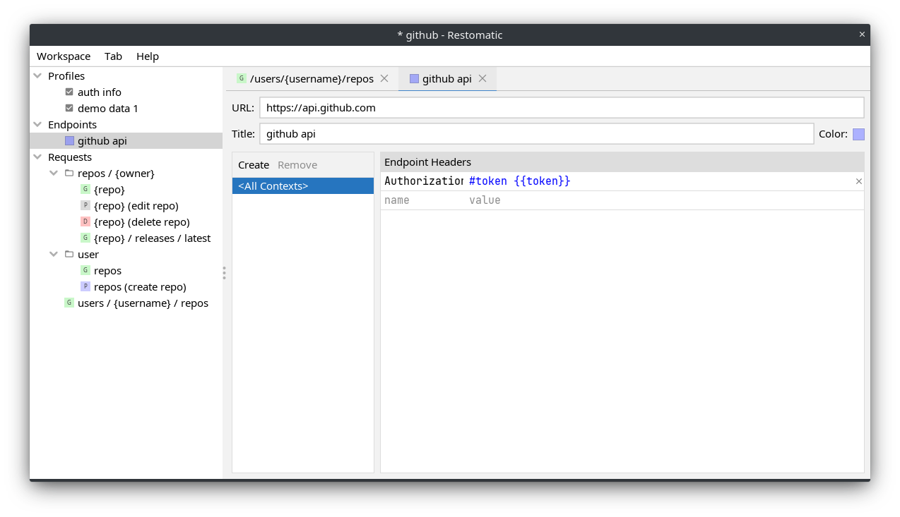

Features
Request templates
- Define path and query parameters
- Define request headers
- Misc request body types: text, form, multipart, file
- The request hierarchy is organized dynamically as you change the request path
- Seamless search
- Temporary request templates to experiment without touching the original template
- View JSON response as tree
Endpoints
- Define headers to be applied to each request sent to an endpoint
- Define colors to visually identify each endpoint
- Override headers for each context path inside endpoint
- View and modify cookies received during request execution
Authenticators
- HTTP Basic authenticator
- Custom scenario authenticator using JavaScript
Profiles
- Keep environment-specific data in profile variables
- Enable multiple profiles (e.g., "User Joe" and "Target dev2")
- Substitute profile variables using Handlebars expressions
FAQ
-
How to run Restomatic?
Restomatic requires the latest version of Java 11 to run.
Execute the following command after installing Java:
java -jar restomatic.jar
-
Is it ok to be paranoid?
Restomatic regularly checks for updates. It is done by querying github for the latest release of Restomatic. A paranoid person would worry that some sensitive info may be sent during update check. Don't worry, just open application settings (Workspace->Settings) and disable update checks.
-
How can I help?
It would be great to build a better project info page to replace this generated one. Also feel free to report bugs or feature requests.
-
Is there an example workspace file?
Check this one. This example showcases a subset of GitHub REST API. After opening the workspace file change the value of "token" and "userId" parameters inside the "auth info" profile.
Demo
Screenshots
 
